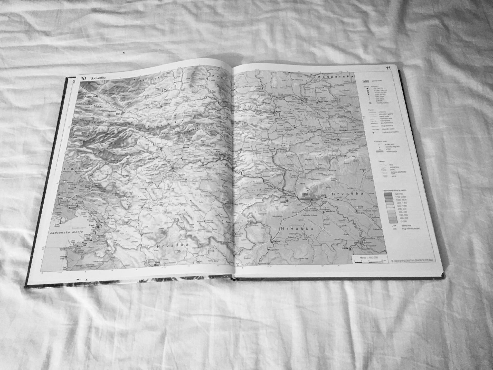

Feministično gibanje na slovenskem se je začelo v 80-ih letih 20. stoletja, kot upor proti enostrankarski vladavini in tedanji obravnavi ženskega vprašanja. Tematika gibanja je izhajala iz zahodnega feminizma, ki se je razvil iz novega, netradicionalnega političnega in socialnega prostora. V Jugoslaviji in Sloveniji je gibanje odprlo demokratično vprašanje, saj je iskalo načine, kako zmanjšati razlike med spoloma. Projekt pridobitve enakopravnega položaja žensk je v Jugoslaviji pomenil večjo vključenost žensk v družbenem življenju in na področju dela, ne pa tudi na področju politike, kjer se je o enakopravnosti odločalo. Žensko vprašanje so obravnavali v povezavi s pravicami, ki izhajajo iz vidika delovne ženske (enako plačilo za enako delo, porodniški dopust). Med ljudmi je vladalo prepričanje, da bodo spola izenačili z različnimi ukrepi in pridružitvami k deklaracijam.
